🐟 Acoustic Receiver Array Design and Movement Simulation
Optimizing Telemetry Systems and Simulating Fish Movement Patterns
Jake Brownscombe
2026-04-14
Source:vignettes/Array_Design_Simulation.Rmd
Array_Design_Simulation.RmdAnalysis Overview
This tutorial demonstrates acoustic telemetry array design and movement simulation using the positionR package. This workflow provides tools for optimizing receiver placement, modeling detection efficiency, and simulating realistic fish movement patterns to evaluate system performance.
Key Applications: - 📡 Optimize receiver array configurations for maximum coverage - 📊 Generate detection efficiency models based on distance and depth - 🐟 Simulate realistic fish movements and generate detection patterns - 🏡 Estimate space use and home range from simulated data - 🌿 Analyze habitat selection patterns
Ideal for researchers planning acoustic telemetry studies who want to evaluate different array designs and predict system performance before field deployment. These tools are also useful in conjuction with positioning algorithms to determine optimal settings (see WADE tutorial).
🚀 Setup & Data Preparation
Load Environmental Data
We’ll use the example depth raster of Stoney Lake, Ontario, Canada included in the package:
# Load example depth raster
data("depth_raster")
raster::crs(depth_raster) <- "EPSG:32617" # UTM Zone 17N
# View raster properties
depth_raster## class : RasterLayer
## dimensions : 127, 168, 21336 (nrow, ncol, ncell)
## resolution : 100, 100 (x, y)
## extent : 720304, 737104, 4929241, 4941941 (xmin, xmax, ymin, ymax)
## crs : +proj=utm +zone=17 +datum=WGS84 +units=m +no_defs
## source : memory
## names : layer
## values : -32.49542, 0 (min, max)
# Quick visualization
plot(depth_raster, main = "Study Area: Stoney Lake, Ontario",
col = colorRampPalette(c("darkblue", "lightblue"))(50))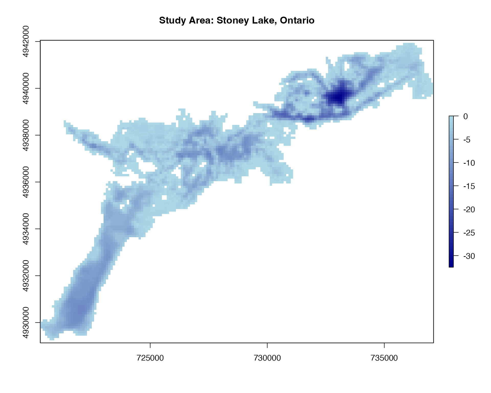
📡 Receiver Array Design
The first critical step in acoustic telemetry is designing an effective receiver array. The spatial configuration of receivers determines detection coverage, positioning accuracy, and ultimately the quality of movement/space use data collected.
Generate Array Configurations
positionR provides three methods for generating receiver stations with different spatial arrangements:
# Regular spacing - specified number of points in systematic pattern
stations_regular <- generate_regular_points(depth_raster, n_points = 100, seed = 123)
# Fixed spacing - points separated by specified distance
stations_spaced <- generate_spaced_points(depth_raster, spacing = 1000, seed = 123)
# Random locations - randomly distributed points
stations_random <- generate_random_points(depth_raster, n_points = 100, seed = 123)
# View station data structure
stations_spaced # Note: includes depth values for each station## Simple feature collection with 44 features and 4 fields
## Geometry type: POINT
## Dimension: XY
## Bounding box: xmin: 720804 ymin: 4929741 xmax: 735804 ymax: 4940741
## Projected CRS: WGS 84 / UTM zone 17N
## First 10 features:
## geometry x y station_id raster_value
## 1 POINT (720804 4929741) 720804 4929741 1 -4.4574073
## 2 POINT (721804 4929741) 721804 4929741 2 -4.2318250
## 3 POINT (721804 4930741) 721804 4930741 3 -11.3425511
## 4 POINT (721804 4931741) 721804 4931741 4 -6.6432655
## 5 POINT (722804 4931741) 722804 4931741 5 -5.2543719
## 6 POINT (722804 4932741) 722804 4932741 6 -5.7718487
## 7 POINT (722804 4933741) 722804 4933741 7 -1.2150741
## 8 POINT (723804 4933741) 723804 4933741 8 -3.6121938
## 9 POINT (723804 4934741) 723804 4934741 9 -2.5111908
## 10 POINT (724804 4934741) 724804 4934741 10 -0.6993271
# Visualize different array configurations
plot_points_on_input(depth_raster, stations_regular) 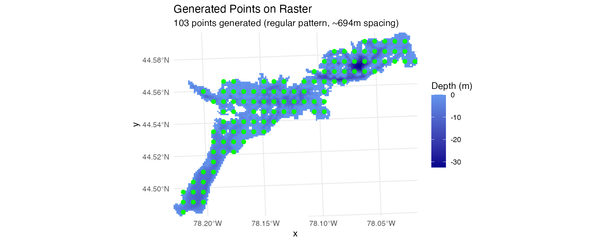
plot_points_on_input(depth_raster, stations_spaced) 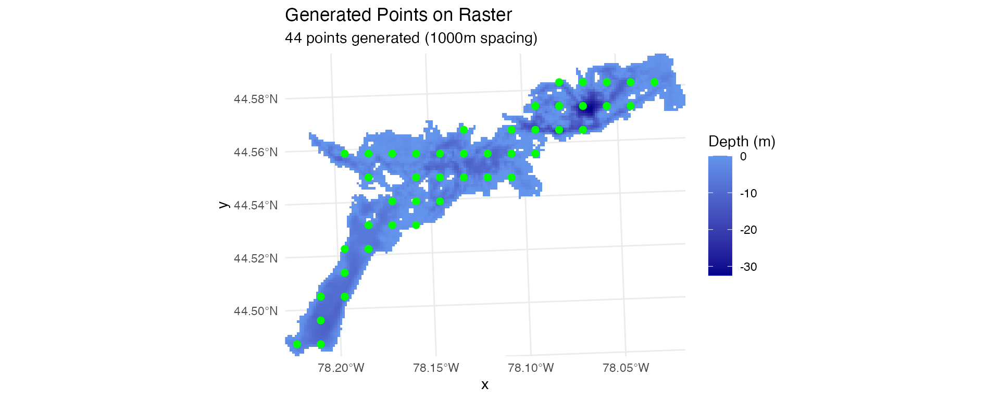
plot_points_on_input(depth_raster, stations_random) 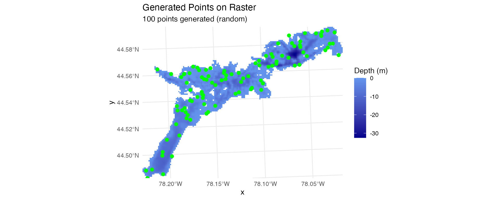
Calculate Station Distances
Calculate cost-distance and straight-line distance from each receiver to all raster cells. This is essential for modeling detection efficiency across the study area:
# Calculate shortest path distances, straight line distances, and tortuosity
station_distances <- calculate_station_distances(
raster = depth_raster,
receiver_frame = stations_regular,
station_col = "station_id",
max_distance = 30000 # 30 km maximum distance
)## Distance calculations complete!
## Result contains 496254 station-cell combinations
## Station IDs ( integer ): 1, 2, 3, 4, 5 ...
# Visualize distance field for one receiver
ggplot(station_distances %>% filter(station_no == 1),
aes(x, y, fill = cost_distance)) +
geom_raster() +
scale_fill_viridis_c(option = "magma", name = "Distance (m)") +
geom_point(data = stations_regular %>% filter(station_id == 1),
aes(x, y), col = "green", size = 4, inherit.aes = FALSE) +
labs(title = "Cost Distance Field from Station 1",
subtitle = "Green point = station location") +
theme_minimal() +
coord_sf()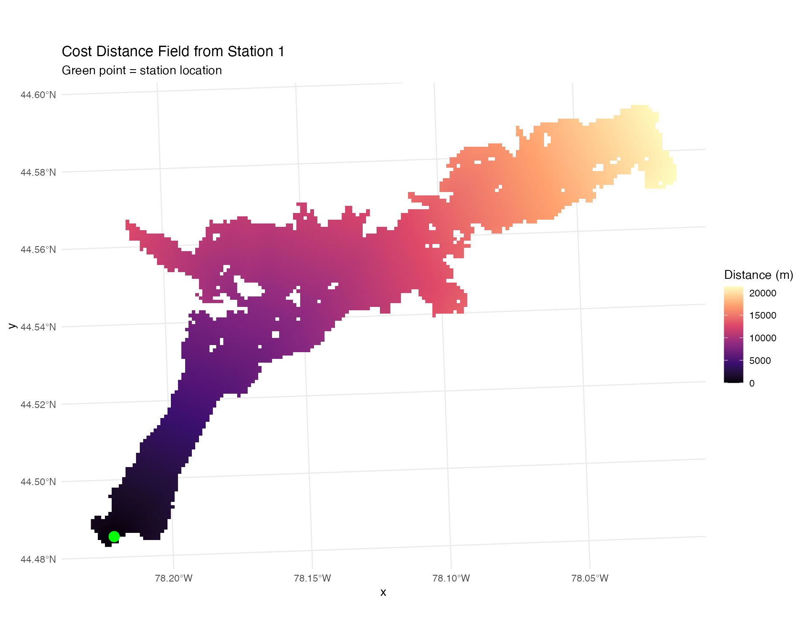
ggplot(station_distances %>% filter(station_no == 1),
aes(x, y, fill = tortuosity)) +
geom_raster() +
scale_fill_viridis_c(option = "magma", name = "Tortuosity", limits=c(0.9,1.5)) +
geom_point(data = stations_regular %>% filter(station_id == 1),
aes(x, y), col = "green", size = 4, inherit.aes = FALSE) +
labs(title = "Tortuosity Field from Station 1",
subtitle = "Green point = station location") +
theme_minimal() +
coord_sf()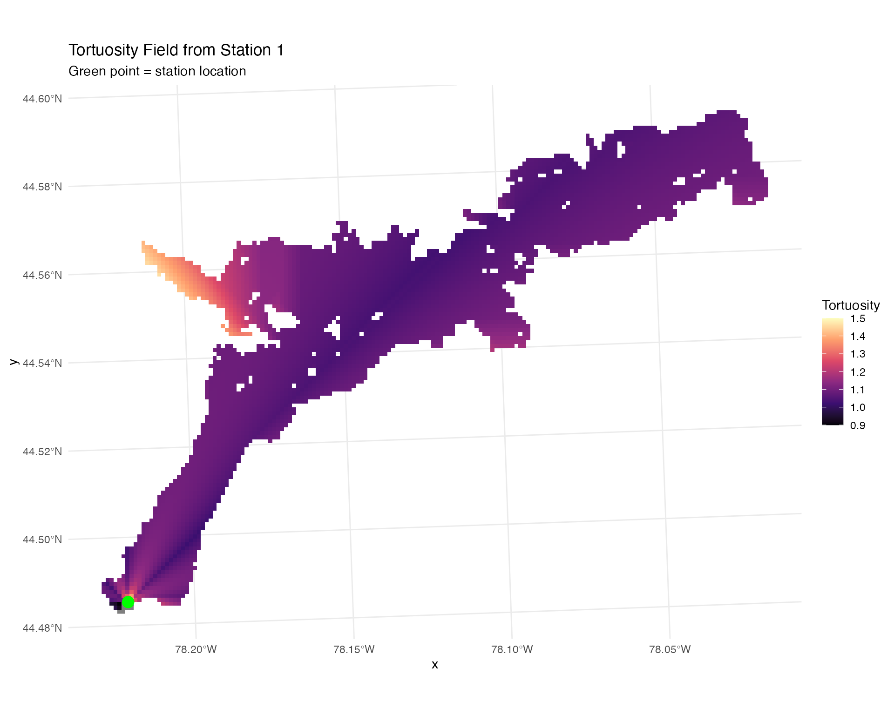
Barrier Masking
The calculate_station_distances() function automatically
identifies where the line-of-sight between receivers and grid cells
crosses land barriers (islands, peninsulas). This information is stored
in the crosses_barrier column and can be used to prevent
unrealistic detections through obstacles:
# Visualize barrier field for one station
ggplot(station_distances %>% filter(station_no == 1),
aes(x, y, fill = crosses_barrier)) +
geom_raster() +
scale_fill_manual(values = c("#4A90A4", "#D4816F"),
labels = c("Clear path", "Crosses barrier")) +
geom_point(data = stations_regular %>% filter(station_id == 1),
aes(x, y), col = "green", size = 4, inherit.aes = FALSE) +
labs(title = "Barrier Field from Station 1",
subtitle = "Locations where line-of-sight crosses land") +
theme_minimal() +
coord_sf()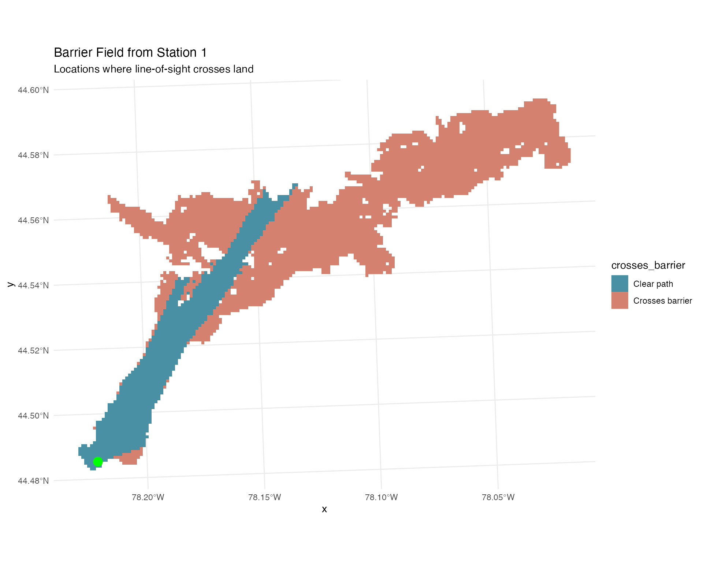
📊 Detection Range Modeling
Detection range is highly variable and depends on environmental conditions, e.g. depth, temperature, substrate type, and ambient noise. Accurate detection models are essential for understanding system performance and interpreting detection patterns. This function can be used to generate basic detection range curves, although it is recommended to collect and model system specific conditions for application.
Create Depth-Dependent Detection Model
Model detection efficiency as a function of distance and depth. This example is reasonably representative of inland lake conditions, but is not dynamic over time:
# Create logistic detection efficiency model
# These parameters should be based on empirical range testing
logistic_DE <- create_logistic_curve_depth(
min_depth = 1, # Minimum depth (m)
max_depth = 35, # Maximum depth (m)
d50_min_depth = 200, # 50% detection range at min depth (m)
d95_min_depth = 400, # 5% detection range at min depth (m)
d50_max_depth = 500, # 50% detection range at max depth (m)
d95_max_depth = 1000, # 5% detection range at max depth (m)
plot = TRUE,
return_model = TRUE,
return_object = TRUE
)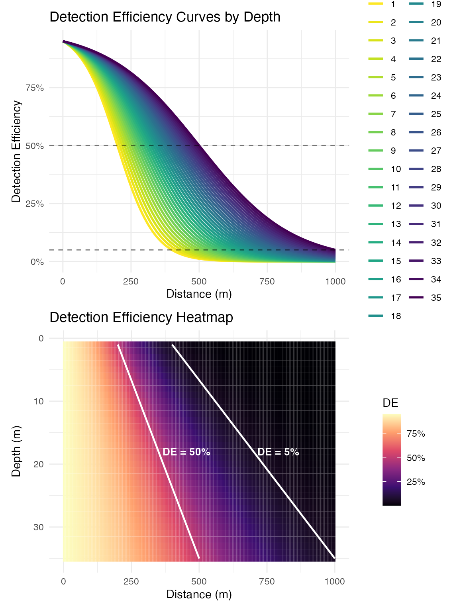
##
## Call:
## stats::glm(formula = DE ~ dist_m * depth_m, family = stats::binomial(link = "logit"),
## data = predictions)
##
## Deviance Residuals:
## Min 1Q Median 3Q Max
## -0.256280 -0.034500 0.008532 0.043991 0.087721
##
## Coefficients:
## Estimate Std. Error z value Pr(>|z|)
## (Intercept) 2.612e+00 1.653e-01 15.803 <2e-16 ***
## dist_m -1.180e-02 4.809e-04 -24.547 <2e-16 ***
## depth_m 1.554e-02 7.635e-03 2.035 0.0418 *
## dist_m:depth_m 1.715e-04 1.897e-05 9.041 <2e-16 ***
## ---
## Signif. codes: 0 '***' 0.001 '**' 0.01 '*' 0.05 '.' 0.1 ' ' 1
##
## (Dispersion parameter for binomial family taken to be 1)
##
## Null deviance: 4232.395 on 7034 degrees of freedom
## Residual deviance: 25.731 on 7031 degrees of freedom
## AIC: 2666.2
##
## Number of Fisher Scoring iterations: 7
# The fitted model can be used for predictions
summary(logistic_DE$log_model)##
## Call:
## stats::glm(formula = DE ~ dist_m * depth_m, family = stats::binomial(link = "logit"),
## data = predictions)
##
## Deviance Residuals:
## Min 1Q Median 3Q Max
## -0.256280 -0.034500 0.008532 0.043991 0.087721
##
## Coefficients:
## Estimate Std. Error z value Pr(>|z|)
## (Intercept) 2.612e+00 1.653e-01 15.803 <2e-16 ***
## dist_m -1.180e-02 4.809e-04 -24.547 <2e-16 ***
## depth_m 1.554e-02 7.635e-03 2.035 0.0418 *
## dist_m:depth_m 1.715e-04 1.897e-05 9.041 <2e-16 ***
## ---
## Signif. codes: 0 '***' 0.001 '**' 0.01 '*' 0.05 '.' 0.1 ' ' 1
##
## (Dispersion parameter for binomial family taken to be 1)
##
## Null deviance: 4232.395 on 7034 degrees of freedom
## Residual deviance: 25.731 on 7031 degrees of freedom
## AIC: 2666.2
##
## Number of Fisher Scoring iterations: 7Apply Detection Model
Apply the detection range model to predict detection efficiency for each receiver across the study area:
# Predict detection efficiency for each receiver-cell combination
station_distances$DE_pred <- stats::predict(
logistic_DE$log_model,
newdata = station_distances %>%
rename(dist_m = cost_distance) %>%
mutate(depth_m = abs(raster_value)),
type = "response"
)
# Visualize detection efficiency field for one station
ggplot(station_distances %>% filter(station_no == 10),
aes(x, y, fill = DE_pred)) +
geom_raster() +
scale_fill_viridis_c(option = "magma", name = "Detection\nEfficiency") +
labs(title = "Detection Efficiency Field - Station 10",
subtitle = "Probability of detecting a transmission") +
theme_minimal() +
coord_sf()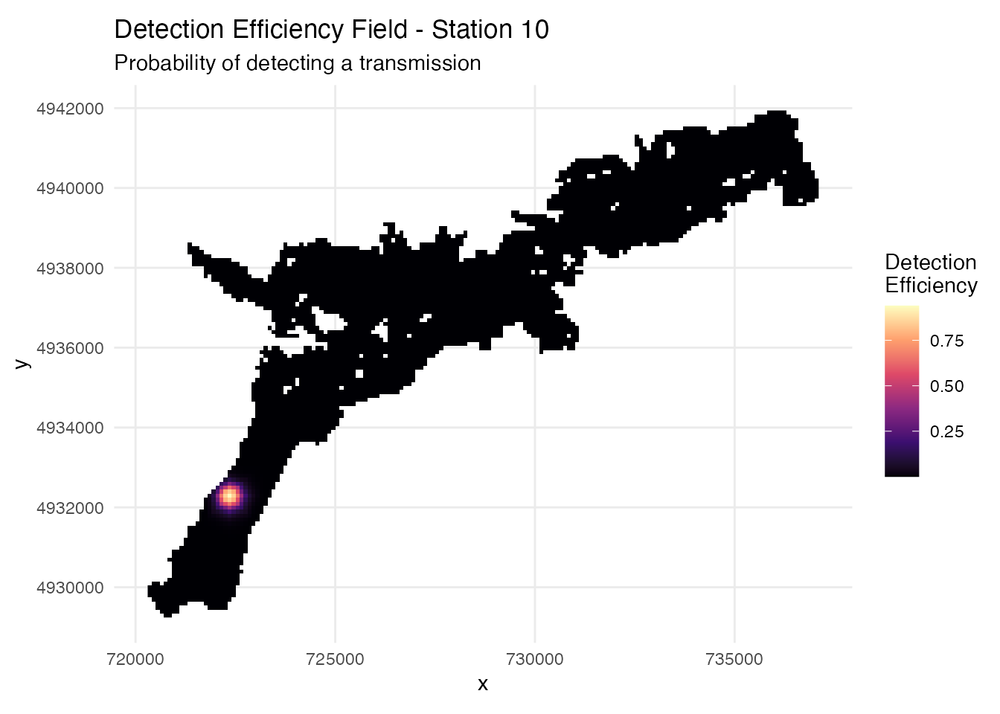
System-Wide Detection Coverage
Analyze detection performance at the system level to evaluate array design effectiveness:
# Calculate system-level detection probabilities
# Options: "cumulative" (any receiver), "3_plus" (≥3 receivers), "both"
system_DE <- calculate_detection_system(
distance_frame = station_distances,
receiver_frame = stations_regular,
model = logistic_DE$log_model,
output_type = "cumulative", # Fast computation
plots = TRUE,
include_barriers = TRUE # Incorporate barrier masking
)## Barrier masking enabled - will set DE = 0 where paths cross barriers
## Using all 103 stations (no date filtering)
## Calculating detection probabilities...
## Using existing DE_pred column
## Masked 351006 of 496254 station-cell pairs (70.7%) due to barriers
## Calculating system probabilities...
## Creating plots...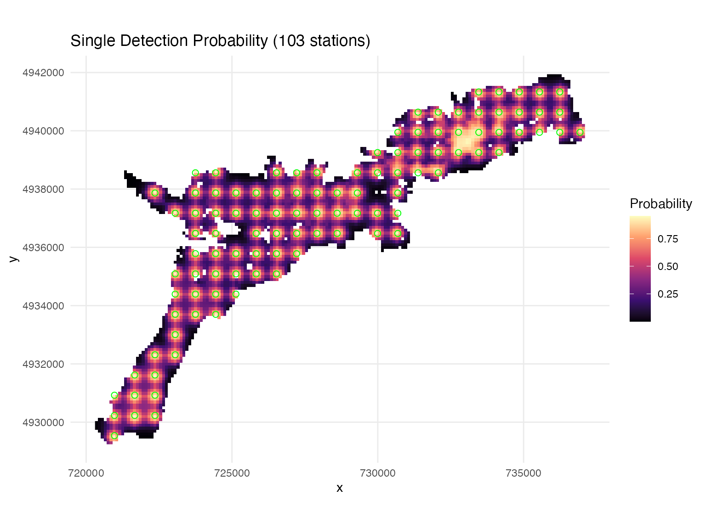
##
## === Detection System Summary ===
## Target date: All dates
## Active stations: 103
## Mean cumulative detection probability: 0.448
# Key outputs:
# system_DE$data - detection probability data
# system_DE$plots$cumulative - visualization🐟 Fish Movement Simulation
Simulating fish movements allows us to evaluate array performance under known conditions. By generating tracks with known properties, we can assess detection probability, positioning accuracy, and space use estimation methods. There are flexible options for generating simulated tracks, users are encouraged to develop movement models specific to species characteristics (see advanced simulation vignette).
Barrier Masking: When
include_barriers = TRUE, the simulation prevents detections
through land obstacles (islands, peninsulas). Detection efficiency is
set to 0 where the line-of-sight crosses a barrier, creating more
realistic detection patterns that account for physical geography.
Generate Realistic Fish Tracks
Generate fish movements using correlated random walks and simulate detections based on the array and detection model:
# Set start time for temporal consistency
start_time <- as.POSIXct("2025-07-15 12:00:00", tz = "UTC")
# Simulate fish tracks with detections
fish_simulation <- simulate_fish_tracks(
raster = depth_raster,
station_distances = station_distances, # Contains DE_pred values
n_paths = 10, # Number of fish
n_steps = 100, # Steps per track
step_length_mean = 50, # Average step length (m)
step_length_sd = 30, # Step length variability
time_step = 60, # Time between steps (seconds)
seed = 123,
start_time = start_time,
include_barriers = TRUE # Prevent detections through land
# Optional species-specific parameters:
# species = "Walleye", # Available: "Walleye", "Smallmouth Bass", "Muskellunge"
# fish_size_cm = 45, # Fish length in cm
# behavioral_states = TRUE, # Three-state movement model
)## Mode: basic (step_mean = 50 , step_sd = 30 )
## Barrier masking enabled: DE will be set to 0 where crosses_barrier = TRUE
## Preprocessing spatial lookup table...
## Generating path 1 of 10
## Generating path 2 of 10
## Generating path 3 of 10
## Generating path 4 of 10
## Generating path 5 of 10
## Generating path 6 of 10
## Generating path 7 of 10
## Generating path 8 of 10
## Generating path 9 of 10
## Generating path 10 of 10
## Simulation complete!
## Start time: 2025-07-15 12:00:00 UTC
## End time: 2025-07-15 13:40:00 UTC
# Examine simulation outputs
#head(fish_simulation$tracks) # Movement tracks
#head(fish_simulation$station_detections) # Individual receiver detections
# Visualize simulated tracks
raster_df <- as.data.frame(depth_raster, xy = TRUE)
ggplot() +
geom_raster(data = raster_df, aes(x = x, y = y, fill = layer)) +
scale_fill_gradient(low = "blue4", high = "cornflowerblue",
na.value = "transparent", name = "Depth (m)") +
geom_path(data = fish_simulation$tracks,
aes(x = x, y = y, group = path_id, color = factor(path_id)),
linewidth = 0.8) +
scale_color_discrete(name = "Fish ID") +
labs(title = "🐟 Simulated Fish Movements",
subtitle = "Correlated random walks with detection events") +
theme_minimal() +
coord_sf()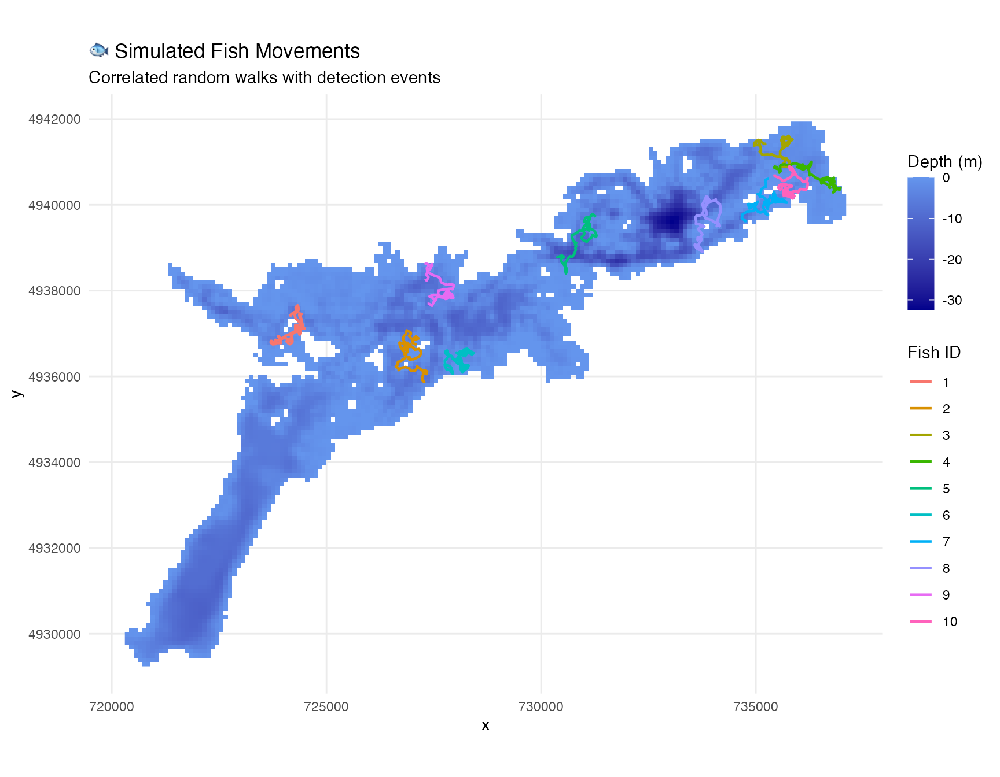
Analyze Detection Performance
Visualize tracks with detection information and analyze detection performance:
# Plot tracks with detection information
plot_fish_tracks(
fish_simulation, # Simulation outputs
depth_raster, # Depth raster
stations_regular, # Receiver array
show_detections = TRUE
)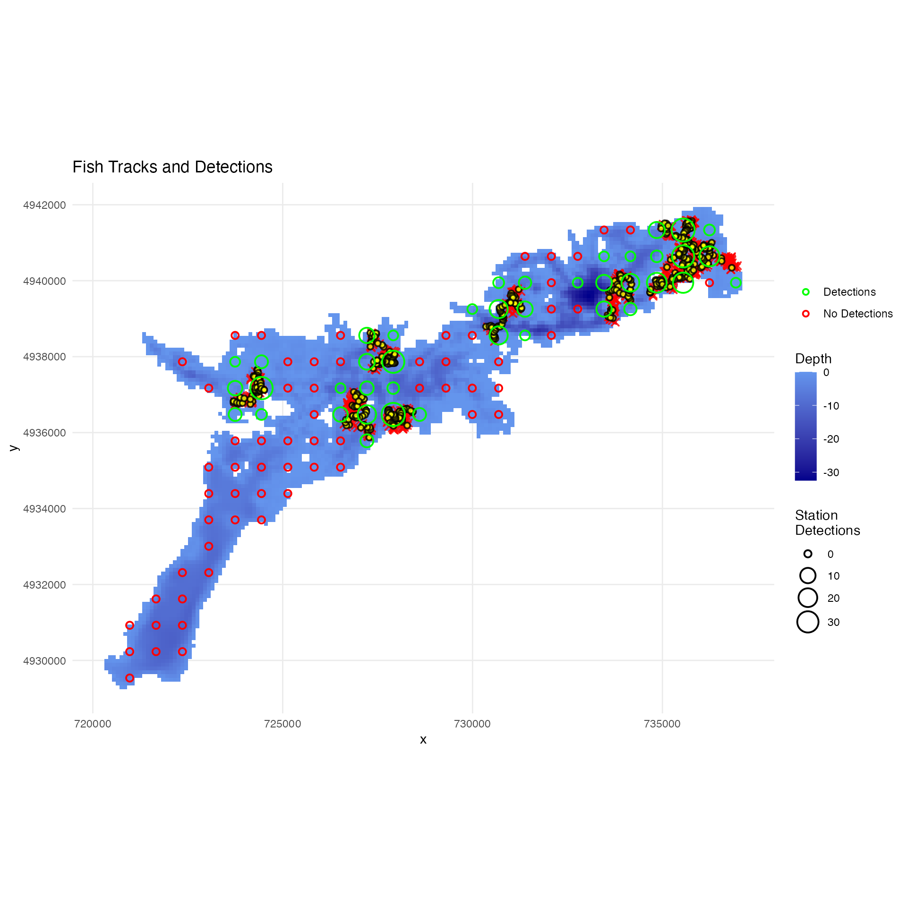
# Analyze detection performance across the array
detection_performance <- analyze_detection_performance(fish_simulation,
create_plots = TRUE,
display_plots = FALSE)## Analyzing detection performance...
##
## === DETECTION SUMMARY REPORT ===
##
## OVERALL DETECTION PERFORMANCE:
## Total steps simulated: 1010
## Steps with detections: 447
## Overall detection rate: 44.3%
##
## DETECTION RATE STATISTICS ACROSS PATHS:
## Mean detection rate: 44.3%
## Median detection rate: 43.6%
## Range: 26.7% - 55.4%
## Standard deviation: 9.0%
##
## DETECTION RATE BY INDIVIDUAL PATH:
## Path 1: 55/101 steps detected (54.5%)
## Path 2: 39/101 steps detected (38.6%)
## Path 3: 53/101 steps detected (52.5%)
## Path 4: 27/101 steps detected (26.7%)
## Path 5: 50/101 steps detected (49.5%)
## Path 6: 44/101 steps detected (43.6%)
## Path 7: 44/101 steps detected (43.6%)
## Path 8: 41/101 steps detected (40.6%)
## Path 9: 56/101 steps detected (55.4%)
## Path 10: 38/101 steps detected (37.6%)
##
##
## Creating visualization plots...
performance_plots <- (detection_performance$plots$by_path +
detection_performance$plots$by_station) /
(detection_performance$plots$distribution +
detection_performance$plots$time_series)
performance_plots +
plot_annotation(
title = "Detection Performance Analysis",
subtitle = "Spatial and temporal patterns in detection probability"
)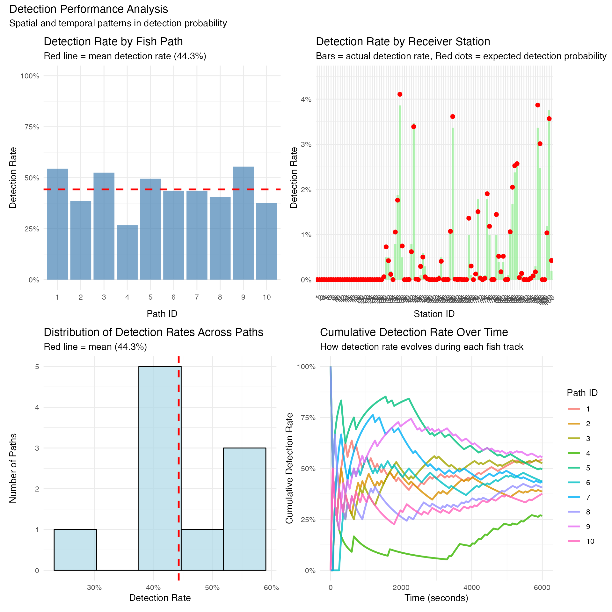
🏡 Space Use Analysis
Space use analysis is fundamental to understanding animal ecology. There are a range of options for characterizing the scale of space use (home range); constrained convex hull is most consistent with typical home range estimates, while grid cell count is more accurate to the specific locations actually occupied.
Calculate Space Use Estimates
Calculate space use estimates from the simulated tracks using multiple methods:
# Calculate space use estimates using multiple methods
space_use_results <- calculate_space_use(
track_data = fish_simulation$tracks,
by_fish = TRUE,
by_time_period = TRUE,
time_aggregation = "day", # Options: "hour", "day", "month", "none"
methods = c("convex_hull", "bounding_box", "grid_cell_count",
"ellipse_95", "constrained_convex_hull", "mcp"),
grid_resolution = 100
)
# View results
print(space_use_results$space_use_estimates)## group_id n_points range_x_m range_y_m centroid_x
## 1 fish_id=1_time_period=1752552000 101 811.4348 908.9238 724196.9
## 2 fish_id=2_time_period=1752552000 101 729.0611 1202.5736 726964.0
## 3 fish_id=3_time_period=1752552000 101 887.2773 725.3207 735537.5
## 4 fish_id=4_time_period=1752552000 101 1544.1541 711.8670 736373.3
## 5 fish_id=5_time_period=1752552000 101 937.3881 1385.7788 730920.4
## 6 fish_id=6_time_period=1752552000 101 680.4398 580.1675 728069.3
## 7 fish_id=7_time_period=1752552000 101 1049.0134 1013.9201 735187.6
## 8 fish_id=8_time_period=1752552000 101 630.1485 1288.3295 733827.5
## 9 fish_id=9_time_period=1752552000 101 667.2057 979.6589 727631.8
## 10 fish_id=10_time_period=1752552000 101 774.2841 742.6337 735798.6
## centroid_y convex_hull_area_m2 convex_hull_area_hectares mcp_area_m2
## 1 4937098 370485.3 37.04853 370485.3
## 2 4936532 554949.8 55.49498 554949.8
## 3 4941325 430719.4 43.07194 430719.4
## 4 4940669 535166.4 53.51664 535166.4
## 5 4939256 569451.0 56.94510 569451.0
## 6 4936392 300637.7 30.06377 300637.7
## 7 4940070 531039.4 53.10394 531039.4
## 8 4939642 543545.9 54.35459 543545.9
## 9 4938057 447141.5 44.71415 447141.5
## 10 4940471 384854.4 38.48544 384854.4
## mcp_area_hectares bounding_box_area_m2 bounding_box_area_hectares
## 1 37.04853 737532.4 73.75324
## 2 55.49498 876749.6 87.67496
## 3 43.07194 643560.6 64.35606
## 4 53.51664 1099232.3 109.92323
## 5 56.94510 1299012.6 129.90126
## 6 30.06377 394769.0 39.47690
## 7 53.10394 1063615.8 106.36158
## 8 54.35459 811838.9 81.18389
## 9 44.71415 653633.9 65.36339
## 10 38.48544 575009.5 57.50095
## grid_cells_used grid_cell_count_area_m2 grid_cell_count_area_hectares
## 1 38 380000 38
## 2 43 430000 43
## 3 34 340000 34
## 4 37 370000 37
## 5 43 430000 43
## 6 34 340000 34
## 7 41 410000 41
## 8 41 410000 41
## 9 35 350000 35
## 10 35 350000 35
## constrained_convex_hull_area_m2 constrained_convex_hull_area_hectares
## 1 390000 39
## 2 560000 56
## 3 420000 42
## 4 560000 56
## 5 580000 58
## 6 260000 26
## 7 520000 52
## 8 540000 54
## 9 450000 45
## 10 390000 39
## fish_id time_period time_period_label
## 1 1 1752552000 2025-07-15
## 2 2 1752552000 2025-07-15
## 3 3 1752552000 2025-07-15
## 4 4 1752552000 2025-07-15
## 5 5 1752552000 2025-07-15
## 6 6 1752552000 2025-07-15
## 7 7 1752552000 2025-07-15
## 8 8 1752552000 2025-07-15
## 9 9 1752552000 2025-07-15
## 10 10 1752552000 2025-07-15
# Compare methods graphically
plot_space_use(space_use_results, plot_type = "comparison")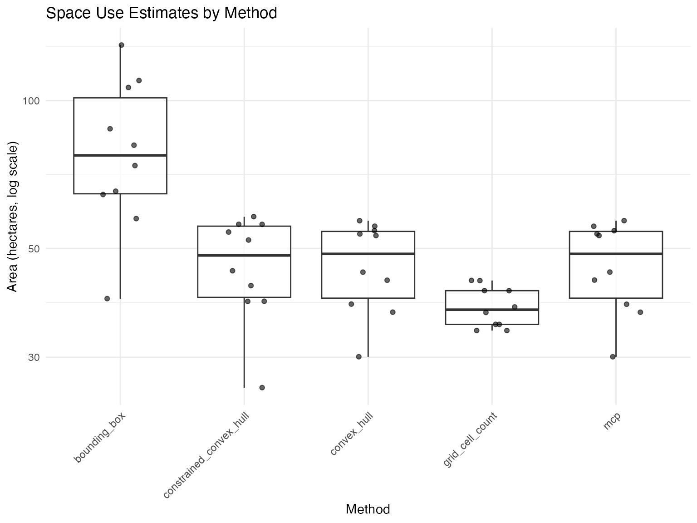
plot_space_use(space_use_results, plot_type = "by_fish")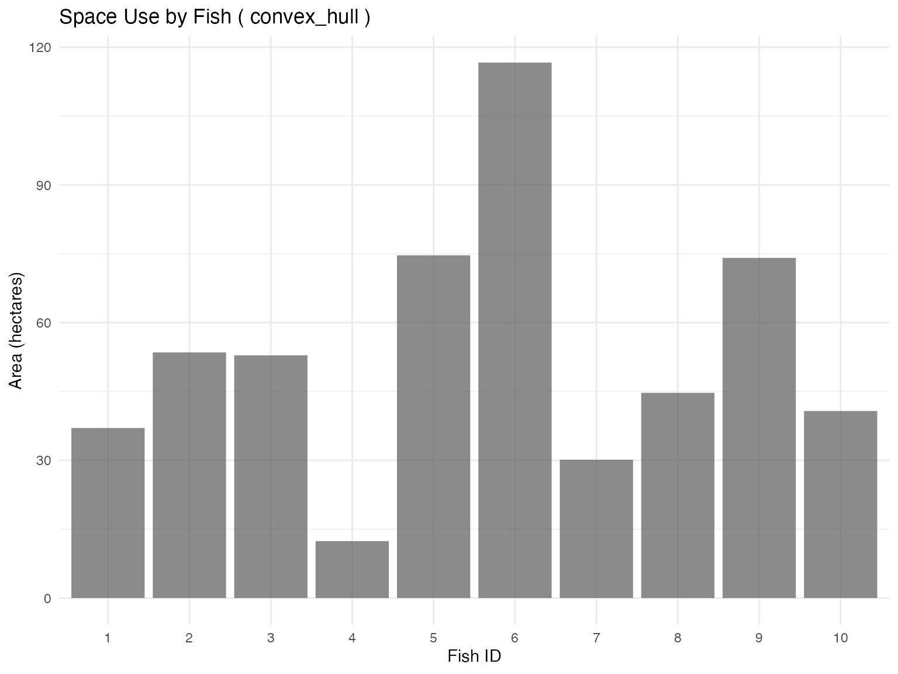
#plot outputs for select methods
# Select fish and time period
fish_select <- 1
time_select <- "2025-07-15"
# Convex hull method
plot_space_use(space_use_results,
plot_type = "map",
track_data = fish_simulation$tracks,
fish_select = fish_select,
time_select = time_select,
method_select = "convex_hull",
background_raster = depth_raster) +
ggtitle("Convex Hull Space Use")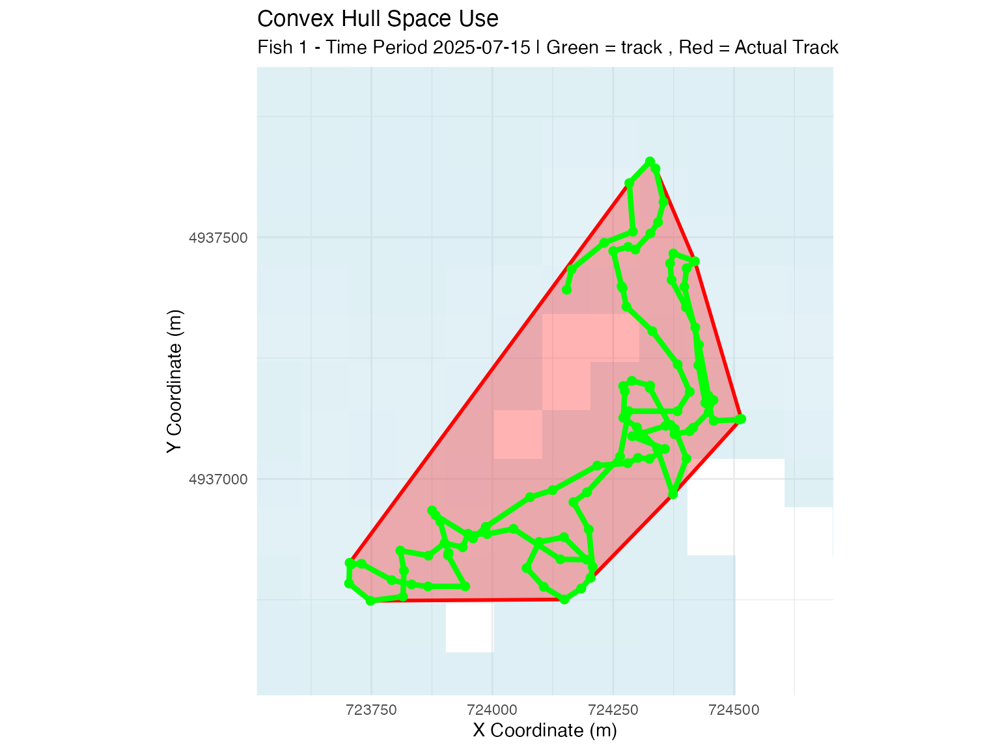
# Constrained convex hull method (raster-based)
plot_space_use(space_use_results,
plot_type = "map",
track_data = fish_simulation$tracks,
fish_select = fish_select,
time_select = time_select,
method_select = "constrained_convex_hull",
background_raster = depth_raster) +
ggtitle("Constrained Convex Hull Space Use")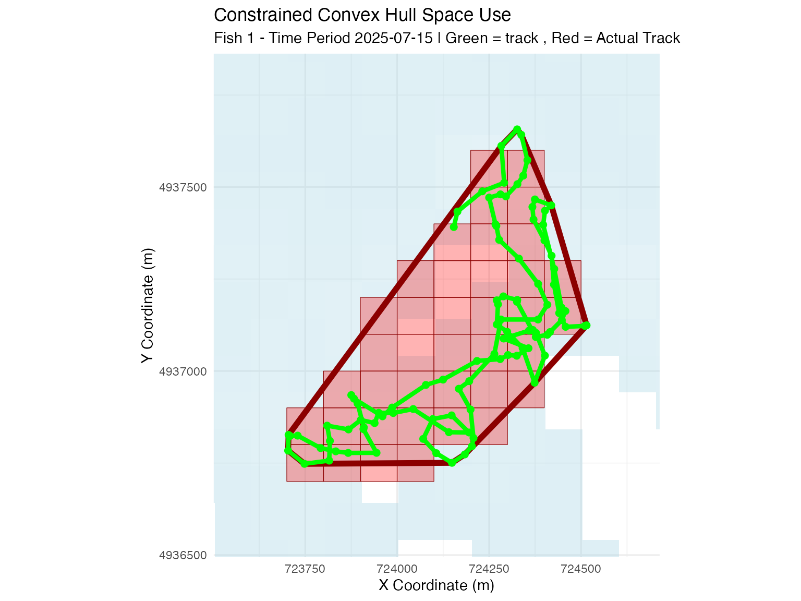
# Grid cell count method
plot_space_use(space_use_results,
plot_type = "map",
track_data = fish_simulation$tracks,
fish_select = fish_select,
time_select = time_select,
method_select = "grid_cell_count",
background_raster = depth_raster) +
ggtitle("Grid Cell Count Space Use")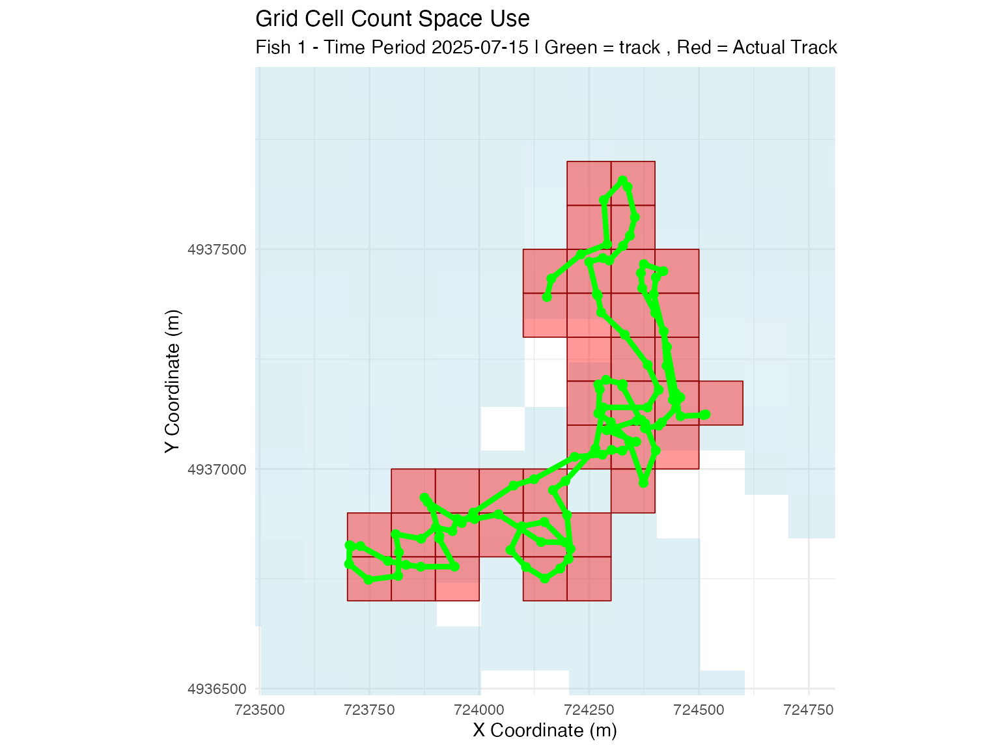
Method Selection Guide
- Grid cell count: Most representative of actual space use when tracking is consistent, but biased with detection gaps when applied to animal positioning.
- Constrained convex hull: More robust to detection gaps with animal positioning, consistent with common home range approaches
- Convex hull: Simple geometric approach, may overestimate space use in complex habitats and does not consider land.
Choose methods based on your data characteristics and research questions.
🌿 Habitat Selection Analysis
Habitat selection analysis helps identify environmental factors that influence animal distribution. By comparing used (presence) locations to available (absence) locations, we can understand habitat preferences.
Generate Presence-Absence Data
Create datasets for habitat selection analysis:
# Generate presence points within space use areas
track_presence <- sample_points_from_track_grid(
track_data = fish_simulation$tracks,
reference_raster = depth_raster,
n_points = 1000,
crs = 32617
)## === TRACK GRID SAMPLING ===
## Grid resolution: 100 meters
## Original track data: 1010 points
## Creating grid and counting track points...
## Created 353 grid cells with track points
## After count thresholds ( 1 <=count<= Inf ): 353 cells
##
## Processing 10 fish-time combinations
## fish_id = 1, time_period_label = 2025-07-15, time_period_posix = 1752537600 : sampled 1000 points from 33 cells (total usage: 101 track points)
## fish_id = 2, time_period_label = 2025-07-15, time_period_posix = 1752537600 : sampled 1000 points from 40 cells (total usage: 101 track points)
## fish_id = 3, time_period_label = 2025-07-15, time_period_posix = 1752537600 : sampled 1000 points from 33 cells (total usage: 101 track points)
## fish_id = 4, time_period_label = 2025-07-15, time_period_posix = 1752537600 : sampled 1000 points from 35 cells (total usage: 101 track points)
## fish_id = 5, time_period_label = 2025-07-15, time_period_posix = 1752537600 : sampled 1000 points from 38 cells (total usage: 101 track points)
## fish_id = 6, time_period_label = 2025-07-15, time_period_posix = 1752537600 : sampled 1000 points from 35 cells (total usage: 101 track points)
## fish_id = 7, time_period_label = 2025-07-15, time_period_posix = 1752537600 : sampled 1000 points from 35 cells (total usage: 101 track points)
## fish_id = 8, time_period_label = 2025-07-15, time_period_posix = 1752537600 : sampled 1000 points from 36 cells (total usage: 101 track points)
## fish_id = 9, time_period_label = 2025-07-15, time_period_posix = 1752537600 : sampled 1000 points from 35 cells (total usage: 101 track points)
## fish_id = 10, time_period_label = 2025-07-15, time_period_posix = 1752537600 : sampled 1000 points from 33 cells (total usage: 101 track points)
##
## === SAMPLING SUMMARY ===
## Total points sampled: 10000
## Grid resolution: 100 meters
## Fish ID(s): 1, 2, 3, 4, 5, 6, 7, 8, 9, 10
## Time periods: 1
## Groups: 10
## Usage range: 1 to 10 track points per cell
## Mean usage: 4.17 track points per cell
# Generate absence points
track_absence<- sample_points_from_system_de(
system_DE,
position_points = track_presence,
n_points = 1000,
uniform = TRUE, #set uniform points (not relative to system DE)
min_prob_threshold = 0.1, #threshold cutoff - only points where >0.1 system DE
crs = 32617,
seed = 123
)## Using probability column: cumulative_prob
## Original data: 4818 cells
## Found 10 fish ID(s) in position_points template
## Found 1 time label(s) in position_points template
## Note: Template contains fish/time information, but system_de data lacks these columns.
## Will replicate sampling across template groups.## After probability thresholds ( 0.1 < prob < 1 ): 4278 cells
##
## Replicating sampling across template fish-time combinations
## Found 10 unique fish-time combinations in template
## fish_id = 1, time_period_posix = 1752537600, time_period_label = 2025-07-15 : replicated 1000 points
## fish_id = 2, time_period_posix = 1752537600, time_period_label = 2025-07-15 : replicated 1000 points
## fish_id = 3, time_period_posix = 1752537600, time_period_label = 2025-07-15 : replicated 1000 points
## fish_id = 4, time_period_posix = 1752537600, time_period_label = 2025-07-15 : replicated 1000 points
## fish_id = 5, time_period_posix = 1752537600, time_period_label = 2025-07-15 : replicated 1000 points
## fish_id = 6, time_period_posix = 1752537600, time_period_label = 2025-07-15 : replicated 1000 points
## fish_id = 7, time_period_posix = 1752537600, time_period_label = 2025-07-15 : replicated 1000 points
## fish_id = 8, time_period_posix = 1752537600, time_period_label = 2025-07-15 : replicated 1000 points
## fish_id = 9, time_period_posix = 1752537600, time_period_label = 2025-07-15 : replicated 1000 points
## fish_id = 10, time_period_posix = 1752537600, time_period_label = 2025-07-15 : replicated 1000 points
##
## === SAMPLING SUMMARY ===
## Total points sampled: 10000
## Probability column: cumulative_prob
## Groups: 10
## Sampled probability range: 0.101 to 0.9484
## Mean probability: 0.4985
#plotting
ggplot() +
geom_raster(data = raster_df, aes(x = x, y = y, fill = layer)) +
scale_fill_gradient(low = "blue4", high = "cornflowerblue",
na.value = "transparent", name = "Depth (m)") +
geom_sf(data = track_presence, aes(color = count),
alpha = 0.5, size = 1) +
scale_color_viridis_c(name = "Count", option = "magma") +
coord_sf() +
theme_minimal() +
labs(title = "Track Presence Points")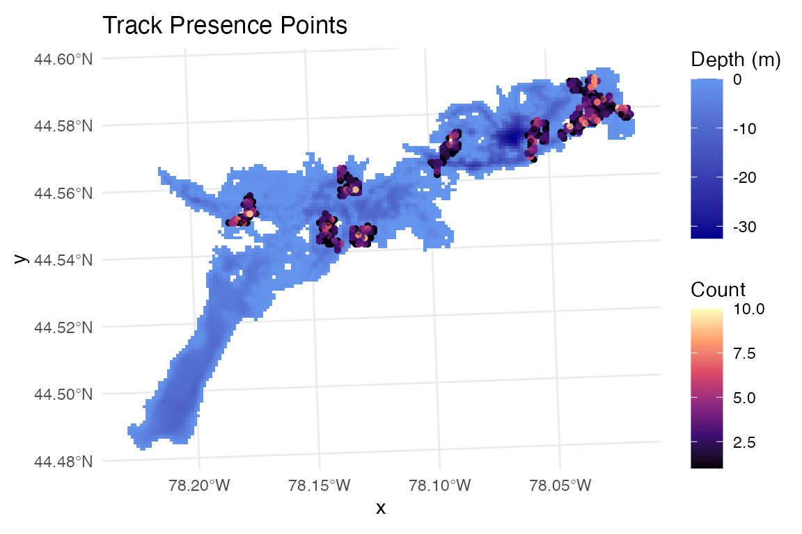
ggplot() +
geom_raster(data = raster_df, aes(x = x, y = y, fill = layer)) +
scale_fill_gradient(low = "blue4", high = "cornflowerblue",
na.value = "transparent", name = "Depth (m)") +
geom_sf(data = track_absence %>% filter(fish_id==1 & time_period_label=="2025-07-15"),
alpha = 1, size = 0.8, col="red") +
scale_color_viridis_c(name = "Cumulative\nProbability") +
theme_minimal()+labs(title="Track Absence Points (Uniform Across System)")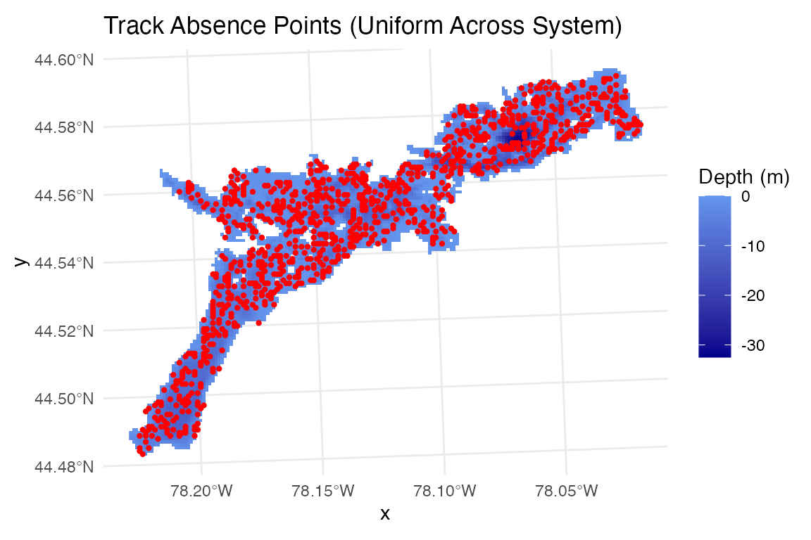
Analyze Depth Selection Patterns
# Add depth values to presence-absence points
track_presence$depth_m <- raster::extract(depth_raster, track_presence)
track_absence$depth_m <- raster::extract(depth_raster, track_absence)
# Combine presence and absence data
track_presence_absence_points <- rbind(
track_presence %>%
select(fish_id, time_period_posix, depth_m) %>%
mutate(type = "presence"),
track_absence %>%
select(fish_id, time_period_posix, depth_m) %>%
mutate(type = "absence")
)
# Analyze depth selection patterns
plot_depth_selection(track_presence_absence_points, plot_type = "density") +
ggtitle("Depth Selection from Simulated Tracks") +
labs(subtitle = "Blue = presences, Red = absences")## Plotting depth selection for 20000 points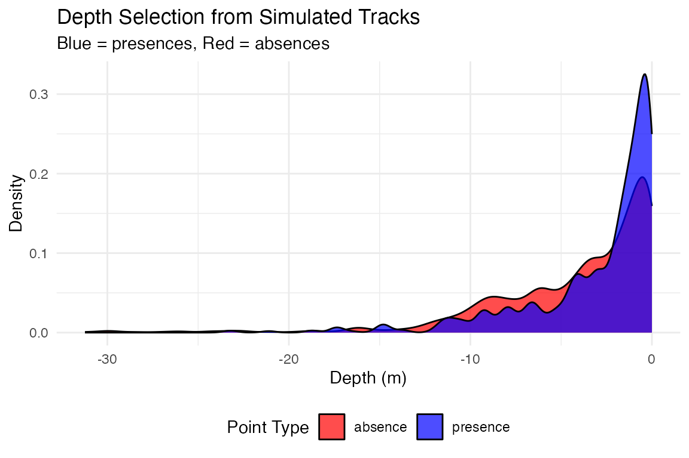
# Compare depth selection by fish
plot_depth_comparison(track_presence_absence_points,
comparison_var = "fish_id",
plot_type = "boxplot") +
ggtitle("Depth Selection by Individual Fish")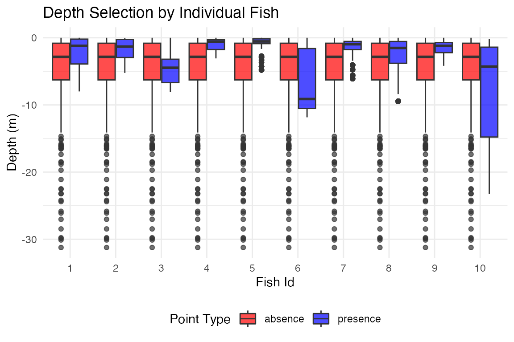
📝 Summary & Conclusions
Key Takeaways
This tutorial demonstrated a complete acoustic telemetry study workflow:
- Array Design: Generated receiver arrays with different spatial configurations
- Detection Modeling: Created depth-dependent detection range models
- Efficiency Analysis: Calculated system-level detection probabilities
- Movement Simulation: Generated realistic fish movements with detections
- Space Use Analysis: Estimated home ranges using multiple methods
- Habitat Analysis: Created presence-absence data for habitat selection studies
💡 Best Practices for Array Design
- Detection range models should be based on empirical range testing data from your study system
- Array configuration significantly affects detection probability and positioning accuracy
- System-level analysis helps identify coverage gaps and optimize receiver placement
- Simulation approaches allow testing of different array designs before costly field deployment
- Iterative refinement - use initial deployment data to improve models and optimize array expansion
- Consider environmental variability - detection ranges vary with temperature, noise, and other factors
Next Steps: - Conduct range testing in your study area to parameterize detection models - Use WADE positioning methods for fine-scale movement analysis (see WADE tutorials) - Compare multiple array configurations to find optimal design for your objectives